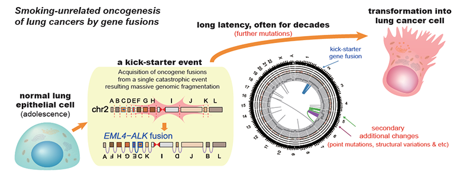

연구성과 10선
연구성과 10선
KAIST RESEARCH ACHIEVEMENTS
비흡연자 폐 선암의
암발생돌연변이 규명
의과학대학원 주영석
요약
폐암은 사망원인 1위의 암으로서 주로 흡연자에서 높은 빈도로 발생하는 것으로 알려져 있다. 하지만 폐 선암 중 25% 정도는 흡연과 무관하게 나타나며, 10% 정도에서는 폐 세포에서 흡연과 무관한 원인으로 생성되는 ‘융합 유전자’ 생성에 의해 암 발생이 이루어지는 것으로 알려져 있다. 우리는 이번 연구에서 138례 폐 선암의 전장유전체 데이터를 생명정보학 방법을 이용해 분석하여 비흡연자 폐암의 융합유전자를 형성하는 유전체 구조 변이의 패턴과 발생 메커니즘을 추적하는 연구를 진행하였다.
연구배경
사람의 정상 세포는 어떻게 암세포로 돌변하는가? 약 30여년 전 유전자의 단일 돌연변이가 정상세포를 암세포로 변화시키는 데 충분하다는 기념비적인 발견 이후 발암의 원인 돌연변이 및 암유전자의 체계적인 발굴은 암유전체 연구의 중요한 목표였다. 특히 지난 10년 간 초고속 유전체 서열 기술(Next Generation Sequencing)을 이용하여 수많은 연구가 진행된 바 있다. 약 10% 정도의 폐 선암(lung adenocarcinoma)은 KRAS나 EGFR 유전자의 point mutation이 아니라, ALK, RET, ROS1등 protein tyrosine kinase 유전자들이 유전체 상에서 멀리 떨어진 다른 파트너 유전자와의 융합에 의해 발생하는데, 우리는 whole genome sequencing (WGS)을 이용하여 융합유전자에 의해 발생한 폐 선암의 유전체 서열을 규명하고자 하였다.
연구내용
이번 연구는 약학적, 유전학적 방식을 사용해 이들 세포가 인간의 췌장 세포와 유사한 분자적 시스템을 통해 포도당을 인지한다는 사실을 확인했다. 이를 기반으로 연구팀은 포도당 감지 신경세포가 어떠한 신경세포 및 조직에 신호를 전달하는 지에 대해 연구했다. 연구팀은 해당 신경세포가 초파리의 인슐린 생산을 담당하는 신경조직 insulin-producing cells, IPCs)과 글루카곤의 기능을 하는 단백질을 생산하는 조직(AKH-producing cells)에 각각 축삭돌기(Axon, 신경 세포체에서 뻗어 나온 돌기)를 이루고 있음을 확인했다. 이 결과는 한 쌍의 포도당 감지 신경세포가 체내 혈당 조절에 중요한 호르몬을 생산하는 조직들에 직접 체내 영양 정보를 전달할 수 있다는 가능성을 발견한 것이다.

유전체 돌연변이의 정밀 분석 결과 융합유전자의 생성이 환자의 일생에서 매우 이른 시기에 일어났다는 결론에 도달 하였다. 정밀한 통계적 접근을 적용하면 평균적으로 융합 유전자는 암 진단 시점으로부터 약 30년 전, 즉 20대 정도에 발생하는 것으로 추정되었으며, 10대 이전 유년기에 융합 유전자가 생성된 것으로 보이는 극단적인 케이스도 있었다. 결론적으로 우리의 연구 결과는, 염색체가 광범위하게 파괴되었다가 재조합되는 복잡구조변이 현상이 인생의 매우 이른 시기에 폐 상피 세포들에서 일어날 수 있으며, 이러한 변이를 가진 세포는 수 십년의 잠복기 후에 폐암세포로 진화 할 수 있다는 사실을 보여주고 있다. 일반적으로 폐 선암의 가장 큰 원인 인자는 흡연으로 알려져 있다. 하지만 흥미롭게도 모든 융합유전자에 의한 폐 선암에서는 흡연에 의해 직접적으로 발생된 돌연변이의 빈도가 매우 낮았으며, 이는 융합유전자의 생성이 흡연과는 큰 관련이 없음을 강력히 시사한다. 일반적인 폐 선암들의 유전체 변이 양상과는 다르게 융합유전자에 의한 폐 선암은 (1) point mutation의 개수가 (tumor mutational burden) 흡연에 의한 폐 선암에 비하여 약 10%내외로 매우 낮았으며 (2) 구조 변이의 빈도 역시 상대적으로 낮아서, 전체적으로 유전체 돌연변이의 수가 매우 적은 특성을 보였다. 뿐만 아니라 일반적으로 폐 선암에서 50-60%의 빈도로 보이는 (3) TP53 (p53) 유전자 돌연변이도 20% 내외로 매우 낮았다. 반면 (4) SETD2 유전자의 truncation mutation의 비율은 약 20%로서 일반 폐 선암에 비하여 매우 높았다 (5배 이상). 결론적으로 융합유전자에 의한 폐 선암은 흡연에 의한 폐 선암과는 발생과정 뿐만 아니라 유전체 돌연변이 특성이 매우 다르다는 점을 관찰할 수 있었다.
기대효과
본 연구는 폐 선암의 전장 유전체를 체계적으로 분석한 첫 번째 연구 결과이다. 본 연구자들은 2012년 폐 선암의 원인 융합유전자인 KIF5B-RET를 RNA equencing 등을 이용해 처음으로 발견해 보고한 바 있다. 하지만 이러한 융합유전자들이 실제로 폐 상피세포에서 어떻게 발생 하는지는 미스테리였으며, 이번 연구를 통해 체계적 정리가 시작된 셈이다. 하지만 우리의 연구 결과는 다시 수 많은 새로운 질문을 던지고 있다. 그 가운데 하나는 사람의 ‘정상 세포에서 복잡구조변이 기전을 유발시키는 원인은 과연 무엇인가’일 것이다. 이를 알아낼 수 있다면, 융합 유전자에 의한 폐 선암을 예방하거나 조기발견 할 수 있는 길이 열리기 때문이다. 실험적으로는 chromosomal segregation error (lagging-chromosome에 의한 micronucleus)나 chromosome end-to-end fusion에 의한 anaphase bridge 형성이 하나의 가능성으로 제시된 바 있다. 이러한 원인들이 실제로 우리 몸에서 일어나고 있는지, 또 다른 원인들은 무엇이 있는지 체계적으로 규명하는 것이 바로 다음 연구의 중요한 목표가 될 것이다.
연구성과
[논문] Lee JJ, Park S, Park H, Kim S, Lee J, Lee J, Youk J, Yi K, An Y, Park IK, Kang CH, Chung DH, Kim TM, Jeon YK, Hong D, Park PJ, Ju YS*, Kim YT*, "Tracing oncogene rearrangements in the mutational history of lung adenocarcinoma", Cell 177(7):1842-1857 (2019) [2018 IF=36.216]
연구비지원
보건복지부 한국보건산업진흥원 (HI16C2387 and HI17C1836)
서경배과학재단, 신진과학자 (SUHF-18010082)